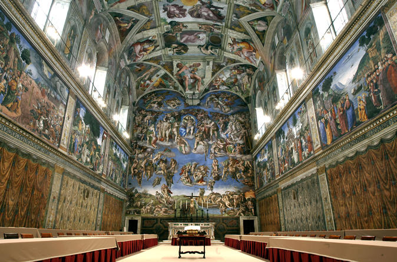

The Sistine Chapel
The Sistine Chapel is a chapel in the Apostolic Palace, the official residence of the Pope, in Vatican City. Originally known as the Cappella Magna, the chapel takes its name from Pope Sixtus IV, who restored it between 1477 and 1480. Since that time, the chapel has served as a place of both religious and functionary papal activity. Today it is the site of the Papal conclave, the process by which a new pope is selected. The fame of the Sistine Chapel lies mainly in the frescos that decorate the interior, and most particularly the Sistine Chapel ceiling and The Last Judgment by Michelangelo.
During the reign of Sixtus IV, a team of Renaissance painters that included Sandro Botticelli, Pietro Perugino, Pinturicchio, Domenico Ghirlandaio and Cosimo Roselli, created a series of frescos depicting the Life of Moses and the Life of Christ, offset by papal portraits above and trompe l’oeil drapery below. These paintings were completed in 1482, and on 15 August 1483 Sixtus IV celebrated the first mass in the Sistine Chapel for the Feast of the Assumption, at which ceremony the chapel was consecrated and dedicated to the Virgin Mary.
Opening Times
From Monday to Saturday 9.00 a.m - 6.00 p.m.
Entrance fee
From €30.00 (book your ticket here)